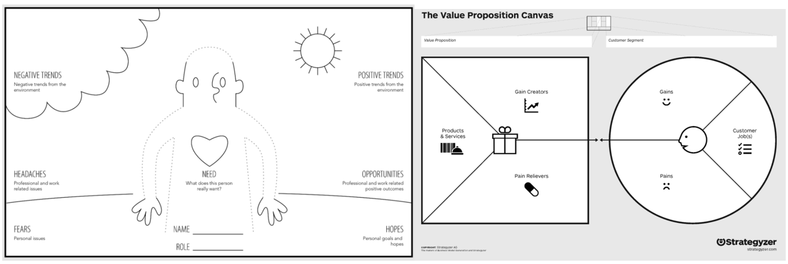
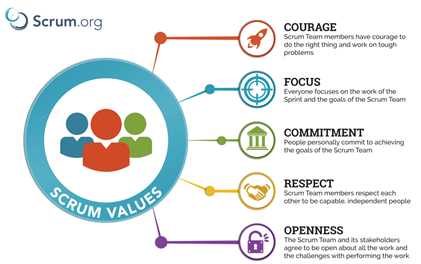

3 Pillars of Digital Transformation
Digital transformation is about redefining how you operate to deliver maximum value, combining the strengths of digital technology with your employees skills to form a "bionic" company. This value can be either:
- Operational Value - Enhanced decision-making capabilities, increased efficiencies, greater agility or introducing new business models
- Customer Value - Building awareness and brand interest, improved customer intimacy or providing a new service
In the sections below we explain how we manage each of the 3 digital transformation pillars to ensure effective transformation programmes are delivered.
- Objectives - A clear understanding of what you hope to achieve and ensuring it aligns with your company strategy.
- Human - Managing the changing behaviour, expectations and needs of all stakeholders throughout the process is crucial
- Technology- Picking the best technical solutions ensuring they are affordable, supportable and scalable to adapt to your evolving requirements

Selecting the Strategic Objectives
Before we can start developing a solution we need to have a clear problem definition. Setting a design challenge in the form of "How might we leverage digital technology to …………? (e.g. improve the accuracy of our demand forecast)" is a great place to start
Business canvases provide an excellent way to develop a collective understanding across the team. In particular we find persona mapping and value proposition canvases, shown below, really help to focus on where your digital solution can add maximum value.
Click on the canvases below to access a variety of templates.
Managing the Human Aspect
Developing a strategy using the design thinking approach is a great way to start engaging your team, but that is only the beginning! You are going to need to keep them involved throughout the process and ensure that the changes made are embedded into the organisation.
To do this we consider the key elements of project and change management:
Agile project management
Traditional project management struggles to deliver in this necessarily more fluid environment. Adopting an agile project management philosophy, splitting the project into smaller (max 4 weeks) sprints, can deliver the following benefits.
- Refining the project objective: As the project progresses new goals will come to light and development can be adapted accordingly
- Change is embraced: With shorter planning cycles, it’s easier to accommodate and accept changes throughout the project.
- Faster, high-quality delivery: Breaking down the project into manageable units allows the team to focus on high-quality development, testing, and collaboration.
- Strong team interaction: Frequent communication and face-to-face interactions enable members to take responsibility and own parts of the project.
- Continuous improvement: Agile projects encourage feedback from users and team members, so lessons learned are used to improve future iterations.
To be successful teamwork is key! We recommend establishing a project charter to share clear expectations.
Effective Change Management
A comprehensive change programme is required to fully realise the value being offered by your new digital solutions. The Leavitt change model, details the interplay of technology with the structure, tasks and people of the organisation, allowing them to be successfully managed.
The key aspects are:
- People - Much within an organisation depends on how the employees work, their expertise, knowledge and skills. Training and recruitment may be required to equip your team with the skills required to operate effectively with the new technology solutions.
- Structure - Digital transformation will automate or simplify some activities while new requirements may also emerge. As a result, what departments are required, how they operate and interact will need to be reviewed.
- Task - New processes will have to be defined enabling employees to adapt to and exploit the technology, by changing their way of doing things.

Developing the Technology
While, large consultancy and technology firms offer expensive and often unmanageable solutions, we focus on using open source libraries and low cost solutions to develop exactly what you need, at a price you can afford. Providing you the flexibility required to evolve and scale with your growing ambitions.
When developing custom applications and functionality we predominantly use the Python programming language. Python is one of the most popular programming languages taught in schools, with an extensive community of support and offers a range of open-source machine learning and statistical libraries. This ensures that the solutions we build remain supportable and can easily be adapted as your requirements evolve.
The 4 key technology components around which we build our digital transformation programmes are:
- Building a Digital Presence – Creating a web site and marketing strategy to make your customers aware and engaged.
- Onboarding a Structured CRM Platform – Building a structured platform to better manage customer accounts / interactions to win new business
- Building New Data Services – Creating web applications required to deliver business efficiencies and offer new customer value.
- Driving Digital Transformation Through Machine Learning and AI – The real value from all that data comes when you are able to make better informed decisions.